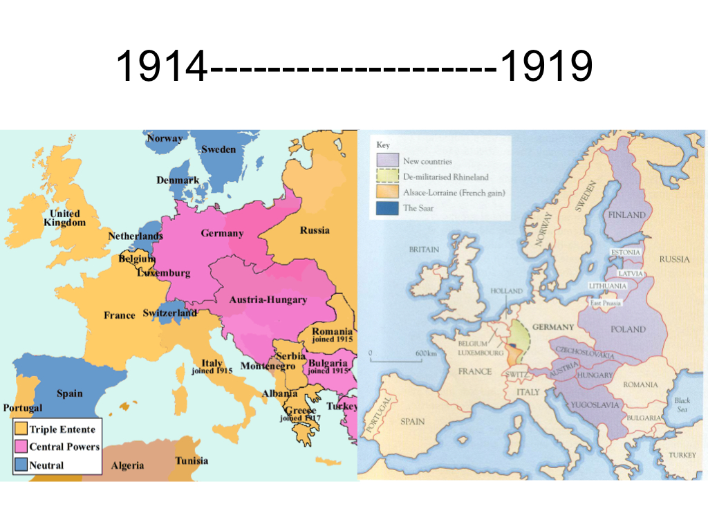

Historical Context
The story In The Penal Colony was influenced by shifting social attitudes towards the state and tradition in a rapidly modernizing world. In the years leading up to World War One, a time marked by the fall of empires and the widespread acceptance of constitutional democracy, ideas of what a proper state looked like were rapidly changing. Religion was beginning to lose importance and the state apparatus, represented in the story by the execution apparatus, was taking a new form.
The old Commander's vision for the colony draws from Christian ideas and imagery, just as European society up until the 19th century had relied heavily on Christianity to maintain social order. The Officer operates on a presumption of guilt, explaining to the traveler that "The basic principle I use for my decisions is this: Guilt is always beyond a doubt."1 The Condemned Man is guilty simply because of the fact that he has been condemned. This is similar to the Christian idea that humans are inherently tainted by Adam's original sin; every person carries guilt inside of them and therefore, every person is deserving of God's wrath and punishment. Another example is the apparatus itself, which serves the function of inducing a revelation in which the condemned person has the appropriate social values instilled into them; this is analogous to the idea of divine revelation through repentance. Faith in the Bible and in the power of divine punishment was enough to maintain cohesion in these societies, as it promised punishment for insurgency: "Remind them to be submissive to rulers and authorities, to be obedient, to be ready for every good work."2 The social order built by the old Commander, based half on fear and half on shared belief in religious ideas, is similar to the Christian order that, up until the time of Kafka, had been the backing of European society.
The Traveler is brought in to examine a new order, one where the large apparatus of the past is beginning to be replaced by a different mode of administration. The new method is never explained in much detail in the story, reflecting the uncertainty in the future of the liberal world around the time Kafka wrote it, but it draws from the decline of empires like the Ottoman Empire, which had been withdrawing from Europe and leaving power vacuums behind as it retreated. New nations, driven by nationalistic movements in areas like the Balkans, were beginning to rise, and the question of who would lead these countries and how was pertinent.3 The old imperial, multiethnic bureaucracies had invited agitation, and democracy promised to administer the will of the people, becoming the favored system of revolutionaries throughout Europe. The old apparatus in the colony, falling apart from disrepair, can be understood as the old imperial model; an overly complicated machine designed to deliver slow and torturous governance to its subjects.

In spite of its pertinence, Kafka's work was met with indifference from critics upon publication. As explained in the biography, Kafka died virtually unknown. The story was first translated to English in 1941, 22 years after its German publication.
- Franz Kafka, “In the Penal Colony,” trans. Ian Johnston, Library of Short Stories, n.d., 1, libraryofshortstories.com.
- Titus 3:1.
- Norman Dwight Harris, “The Effect of Balkan Wars on European Alliances and the Future of the Ottoman Empire.” The American Political Science Review, 8, no. 1 (1914): 105-16. http://www.jstor.org/stable/4617011.